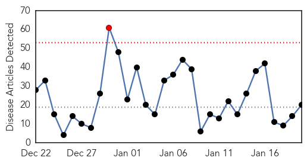
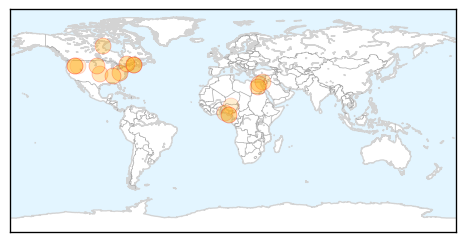

Influenza
30-Day Web Trend
1 alerts, 0 warnings

30-Day Twitter Trend
1 alerts, 0 warnings

Article Locations
Article Confidences
Top Articles:
- 0.997
- Flu shot lowers risk of rare side-effect in most seasons for most people
- 0.996
- CDC reports fourth Tennessee child flu death
- 0.993
- Fourth bird flu death in Egypt this year
- 0.992
- KDLT.com South Dakota News - News, Sports, and Weather Sioux Falls South Dakota
- 0.992
- Widespread influenza prompts restrictions at central Maine hospitals
- 0.991
- Albertans get vaccinated in record numbers, influenza fighting back
- 0.983
- Hospital visitor restrictions due to the flu lifted
- 0.973
- CAMC bars children from visiting hospital due to flu outbreak
- 0.964
- Bird Flu Also Afflicts Humans, Watch Out
- 0.920
- Franklin Memorial restricts visitors due to flu
- 0.918
- Opryland outbreak has companies canceling events
- 0.910
- Bird flu confirmed in 2 Idaho counties
- 0.845
- Flu nearly doubles Winnipeg hospital admission rates
- 0.839
- Two Nigerian cities hit by bird flu: authorities
- 0.813
- Tests reveal H5N1 in Israeli turkeys, four countries report other strains
- 0.773
- Growning Concerns over Bird Flu in Nigeria
- 0.713
- Avian flu discovered in southern Idaho flocks
- 0.555
- Avian flu confirmed in Canyon County
- 0.536
- Bird Flu Spreads to Rivers State
- 0.521
- Rivers Govt. eliminates fowls infected by flu
Top Tweets:
-
No tweets found for Jan 20, 2015
Swine Flu
30-Day Web Trend
4 alerts, 3 warnings

30-Day Twitter Trend
0 alerts, 0 warnings

Article Locations

Article Confidences

Top Articles:
- 1.000
- Swine flu cases on rise
- 1.000
- 169 swine flu patients in Telangana; 7 deaths this year
- 0.999
- Flu shots advisable for high-risk group: expert
- 0.999
- Swine flu hits Telangana hard
- 0.999
- 169 Swine Flu Patients in Telangana; 7 Deaths This Year
- 0.999
- 27 Test Positive for Swine Flu in Telangana
- 0.999
- Swine flu spreads, Hyderabad girl dies of disease
- 0.997
- Indiablooms - First Portal on Digital News Management
- 0.996
- Gurgaon reports third death due to swine flu this year
- 0.996
- 25 new cases of swine flu reported in Hyderabad
- 0.994
- Telangana Chief Secretary checks swine flu status in Hyderabad
- 0.990
- TN reports first H1N1 death, govt says no need for panic
- 0.985
- Model predicts public response to disease outbreaks
- 0.983
- Swine Flu Kills 3 More, Infects 50 in a Day!
- 0.973
- Swine flu: police may suspend drunk-driving check
- 0.963
- Two succumb to swine flu as death toll touches 9 in Andhra Pradesh
- 0.961
- Seven deaths, 173 swine flu cases reported from Andhra Pradesh and Telangana, Video Gallery
- 0.949
- Seven deaths, 173 swine flu cases reported from Andhra Pradesh and Telangana
- 0.740
- H1N1 Strikes its 1st Fatal Blow in City, Takes Away Rail Staffer
Top Tweets:
-
No tweets found for Jan 20, 2015